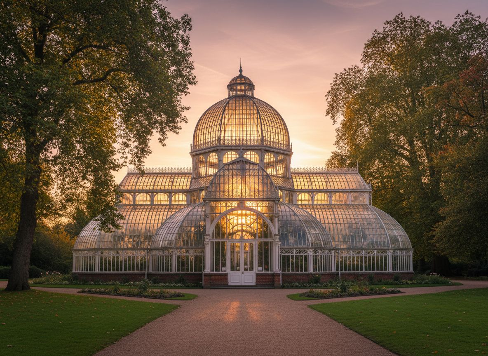

open every day of the year
The door on the north side of Marlowe Park opens at ten. Inside it is always June.
Tickets at the door, no booking needed. Thursdays after five are pay-what-you-wish.
Every path in the house is stepless, the doorways are wide, and wheelchairs are free at the cloakroom. The benches through the Palm Court are spaced for resting as much as looking.
The Glasshouse Café sits at the west end of the Palm Court and pours until close. Tripods are welcome on weekdays before eleven; please leave the drones wherever you brought them from.
Bring a layer. The wings run from 18° in the Fern House to 30° under the palms, and the difference between the two is a corridor about eleven metres long.
The house is quietest on weekday mornings and fullest on Sunday afternoons. Thursday evenings are the local secret: the light comes sideways through the glass and nobody is in a hurry.